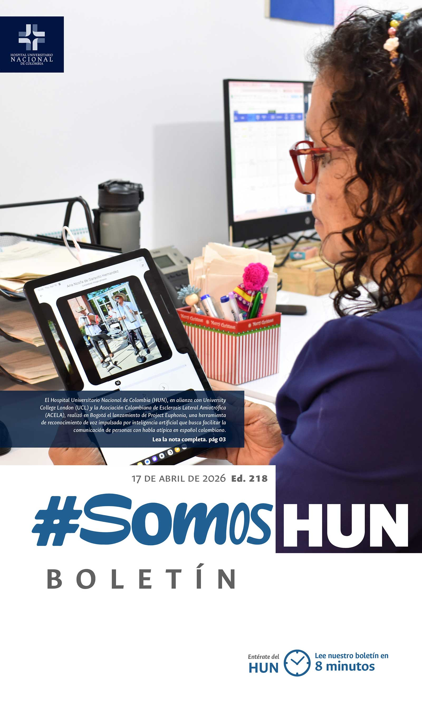
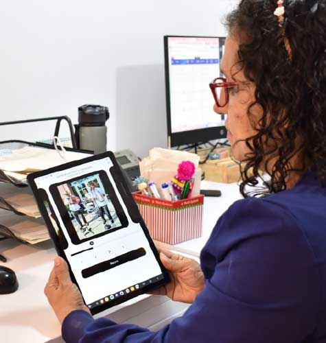
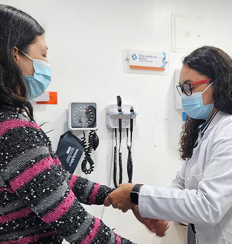
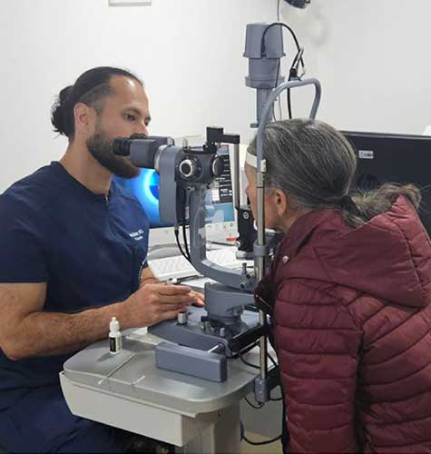
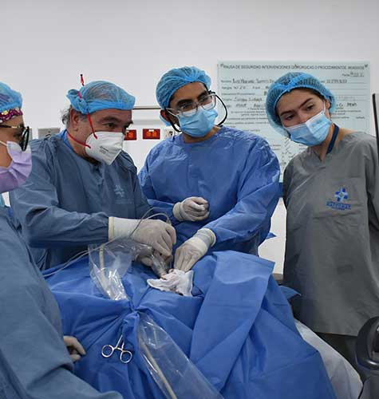

Ver todos los boletines
Colombia abre una nueva puerta a la comunicación con el lanzamiento de Project Euphonia en el HUN
El Hospital Universitario Nacional de Colombia (HUN), en alianza con University College London (UCL) y la Asociación Colombiana de Esclerosis Lateral Amiotrófica (ACELA), realizó en Bogotá el lanzamiento de Project Euphonia, una herramienta de reconocimiento de voz impulsada por inteligencia artificial que busca facilitar la comunicación de personas con habla atípica en español colombiano.Leer más

Un desafío silencioso reconocer el Parkinson a tiempo para mejorar la calidad de vida
Más de 8,5 millones de personas viven con enfermedad de Parkinson en el mundo, una cifra que se ha duplicado en los últimos 25 años y que podría superar los 15 millones para 2050. En Colombia, se estima que afecta a más de 5 personas por cada mil habitantes mayores de 50 años, con mayor frecuencia en hombres y en edades avanzadas.Leer más

El autocuidado fortalece la seguridad del paciente en el camino del HUN hacia el Galardón Hospital Seguro
El Hospital Universitario Nacional de Colombia (HUN) continúa consolidando su cultura de seguridad del paciente en el marco de su postulación al Galardón Nacional Hospital Seguro ACHC 2026–2028, una estrategia que reconoce las mejores prácticas en la prevención de riesgos y la calidad en la atención en salud.Leer más

Así se decide el tratamiento quirúrgico en patología de tiroides
En Colombia, el cáncer de tiroides registra cerca de 5.000 nuevos casos al año, con una incidencia aproximada de 9,9 por cada 100.000 habitantes, siendo uno de los tumores más frecuentes en mujeres.Leer más